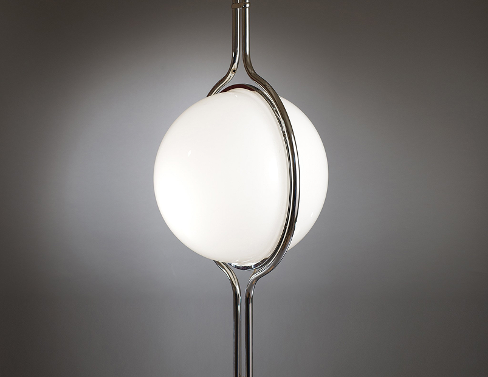
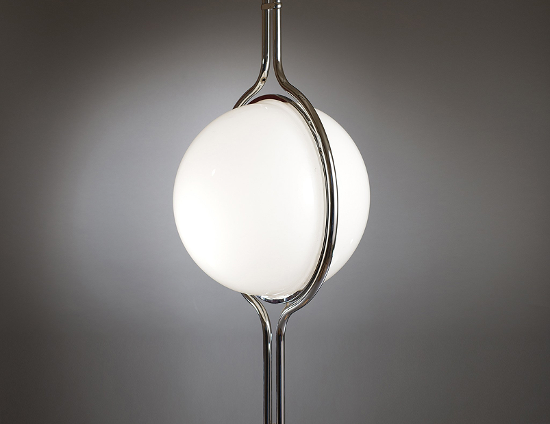

Giovanni Banci
Lampe de Bureau
Description :Ce luminaire sculptural est une pièce forte de l'esthétique Space Age et du design tubulaire des années 1970. Il est conçu pour rompre avec la linéarité fonctionnelle des lampes classiques, transformant le pied en une véritable œuvre d'art cinétique. Son design repose sur le travail virtuose du métal courbé, créant un nœud complexe et fluide qui évoque les circuits d'un vaisseau spatial ou une molécule agrandie, capturant l'œil par son mouvement figé.
Structure :La base est constituée d'un épais tube en métal chromé (acier ou laiton) à la finition miroir impeccable, travaillé en une boucle continue ou un entrelacs serré qui défie la rigidité du matériau. Cette structure brillante reflète son environnement et soutient délicatement, comme en apesanteur, un diffuseur sphérique en verre opalin (ou une ampoule globe oversize), créant un contraste saisissant entre la froideur industrielle du chrome et la douceur incandescente de la lumière.
Dimensions : H. (Hauteur totale) : 45 cm, L. (Largeur) : 30 cm, P. (Profondeur) : 25 cm.